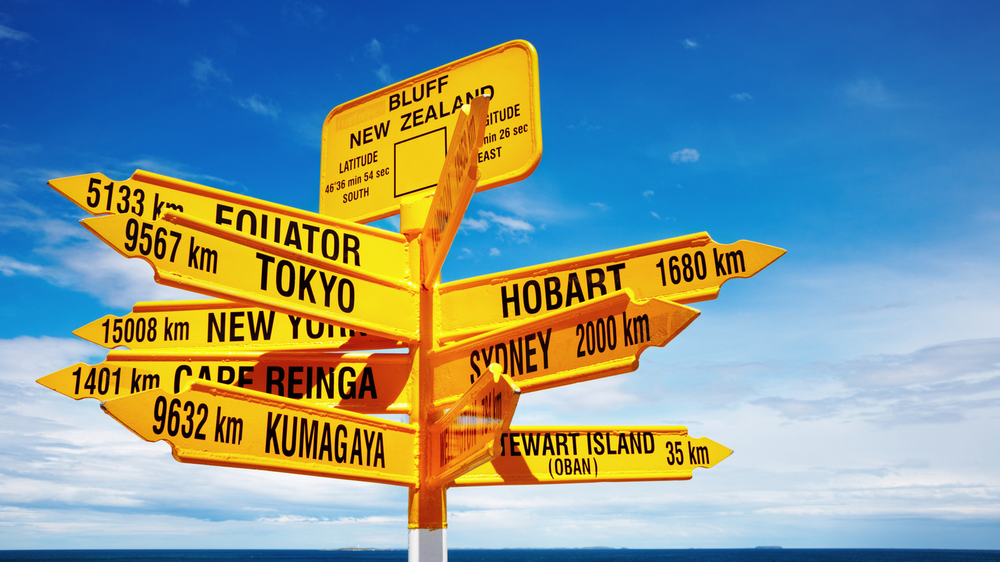

3 steden in Europa
Wil jij super graag reien en steden bezoeken in europa, maar je weet niet waar je heen wilt of waar je moet beginnen met research doen? dan heb ik hier 3 tips voor een heel leuk stedentripje voor een midweek of weekje.
Je kan natuurlijk ook gewoon in nederland blijven, daarom heb ik hier 3
nederlandse steden die je moet zien.
Ook heb ik een searchbar toegevoegd, voor als iets niet duidelijk is
of als je nog meer vragen hebt dan kun je die daar stellen. De searchbar leidt namelijk naar google.